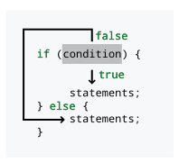
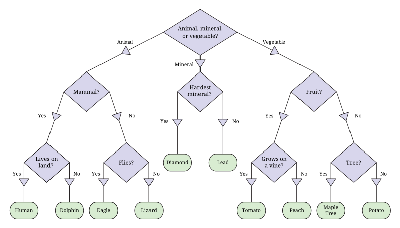

Capítulo 4. Seleção
A vida é a soma de todas as suas escolhas.
4.1. Problema: Simulação de Monty Hall
Existe um famoso enigma matemático chamado problema de Monty Hall, baseado no programa de televisão Let’s Make a Deal, apresentado pelo homônimo Monty Hall. Neste problema, são apresentadas três portas. Duas das três portas escondem lixo. Uma porta selecionada aleatoriamente esconde algo como uma pilha de ouro. Se você conseguir escolher essa porta, você ganha o ouro. Depois que você faz uma escolha inicial, Monty, que sabe atrás de qual porta está a pilha de ouro, abrirá uma das duas outras portas, sempre escolhendo uma porta com lixo atrás dela. Se você escolheu a porta do ouro, Monty escolherá aleatoriamente entre as duas portas com lixo. Depois de abrir uma porta, Monty lhe dá a chance de trocar para a outra porta fechada. Você decide trocar ou não, a porta apropriada é aberta e você ganha ou lixo ou uma pilha de ouro, dependendo da sua sorte.
Acontece que é sempre uma estratégia melhor trocar de porta. Se você mantiver sua escolha inicial, tem 1 em 3 de chance de ganhar o ouro. No entanto, se você trocar de porta, terá 2 em 3 de chance. O problema é contraintuitivo e leva muitas pessoas, incluindo matemáticos e pessoas com pós-graduação, à resposta incorreta.
Pense da seguinte maneira: suponha que você possa escolher duas portas para abrir e que, se o ouro estiver atrás de qualquer uma delas, você ganhe. Claramente, você teria 2 em 3 de chance de ganhar. Monty permite essa opção. Basta escolher as duas portas que você quiser e dizer a Monty qual é a terceira. Ele revela que uma das suas duas portas iniciais é lixo, e você troca para a outra.
Se você ainda não está convencido, tudo bem. Seu objetivo é escrever um programa que simule o dilema de Monty Hall, permitindo que o usuário adivinhe uma porta e, em seguida, possivelmente troque. Depois de escrever a simulação, você pode optar por jogar repetidamente e ver como se sai se mudar de porta.
Um cenário de Monty Hall tem duas características significativas que o distinguem
dos problemas dos capítulos anteriores. Primeiro, a aleatoriedade desempenha um papel.
A geração de números aleatórios tornou-se uma parte importante da ciência da computação
, e a maioria das linguagens fornece aos programadores ferramentas para
gerar números aleatórios ou praticamente aleatórios. Lembre-se da classe Random
de Capítulo 3. Com um objeto de
tipo Random chamado random, você pode gerar um int aleatório entre
0 e n - 1 chamando random.nextInt(n).
A segunda característica, e muito mais importante, do Java na solução para esse problema é o elemento de escolha. Uma porta aleatória é escolhida para esconder o ouro, e o programa deve reagir adequadamente. O usuário escolhe uma porta, e o programa deve escolher cuidadosamente outra porta para abrir em resposta. Por fim, o usuário deve decidir se deseja ou não mudar sua escolha. Inerente a esse problema está a ideia de execução condicional. Todos os programas do capítulo anterior são executados sequencialmente, linha por linha. Com a execução condicional, apenas parte do código pode ser executada, dependendo da entrada do usuário ou dos valores que os números aleatórios assumem. Anteriormente, todos os programas eram determinísticos, uma série de consequências inevitáveis. Agora, esse paradigma linear, em que uma coisa segue a outra, se dividiu em árvores complexas e redes de possíveis execuções de programas.
4.2. Conceitos: Escolhendo entre opções
Antes de abordarmos os números aleatórios e as escolhas complexas envolvidas no problema de Monty Hall, vamos falar sobre a abordagem simplificada que a maioria das linguagens de programação adota para a execução condicional. Quando chegamos a um ponto em um programa onde há uma escolha a ser feita, podemos pensar nisso como a pergunta: “Quero realizar esta série de tarefas?” Assim como o clássico jogo das 20 Perguntas, essas perguntas em Java geralmente têm apenas duas respostas: “sim” ou “não.” Se a resposta for “sim”, o programa conclui a Tarefa A; caso contrário, conclui a Tarefa B. É mais fácil projetar linguagens de programação que possam lidar com perguntas do tipo sim ou não do que qualquer pergunta geral. Se você já estudou lógica no passado, provavelmente se deparou com a lógica booleana. A lógica booleana fornece um conjunto de regras, semelhantes às regras da álgebra tradicional, que podem ser aplicadas a um sistema com apenas dois valores: verdadeiro e falso.
4.2.1. Escolhas simples
Como queremos construir um sistema usando apenas perguntas do tipo sim ou não, a lógica booleana é perfeita para a ciência da computação. Para nos alinharmos com outros cientistas da computação, tentamos pensar nas condições em termos de verdadeiro e falso, em vez de sim e não. Assim, podemos começar a formular os tipos de escolhas que queremos fazer:
Se estiver chovendo lá fora,
vou levar meu guarda-chuva.
Essa afirmação é um programa muito simples, embora não seja um executado por um computador. A pessoa que segue esse programa se pergunta: “Está chovendo hoje?” Se a resposta for “sim,”, então ela vai levar seu guarda-chuva. Podemos abstrair essa ideia um pouco mais dizendo que está chovendo lá fora é uma condição p e que levar meu guarda-chuva é uma ação a. Em outras palavras, se p for verdadeiro, então faça a. Não especificamos o que deve ser feito se p não for verdadeiro, embora possamos supor que o ator nesse drama não levará um guarda-chuva.
Se quisermos ver p como uma decisão a ser tomada, podemos especificar o que acontece se não for verdade. Por exemplo, poderíamos formular outra escolha:
Se eu tiver pelo menos R$50 no bolso,
vou jantar lagosta;
caso contrário,
vou comer fast food.
Nesse caso, vamos considerar ter pelo menos R$50 como a condição q, jantar lagosta como a ação b e comer fast food como a ação c. Agora criamos uma decisão. Se q for verdadeiro, a pessoa realizará a ação b, mas se for falso, ela realizará a ação c.
4.2.2. Operações booleanas
Por si só, a capacidade de escolher entre duas opções já é poderosa, mas podemos ampliar essa capacidade de algumas maneiras. Primeiro, não precisamos depender de condições simples. Usando a lógica booleana, podemos criar condições arbitrariamente complexas.
Se eu estiver entediado, ou se for tarde e eu não conseguir dormir,
vou assistir televisão.
Alguém seguindo este programa assistirá televisão se estiver entediado ou se for tarde e também não conseguir dormir. Podemos dividir a condição em três subcondições: estou entediado é a condição x, é tarde é a condição y, e não consigo dormir é a condição z. Conectamos essas três condições usando as palavras “e” e “ou”. Essas duas palavras simples representam conceitos poderosos na lógica booleana: AND e OR. Quando duas condições são combinadas com AND, o resultado é verdadeiro apenas se ambas as condições forem verdadeiras. Quando duas condições são combinadas com OR, o resultado é verdadeiro se qualquer uma das condições for verdadeira.
Podemos criar uma tabela chamada tabela verdade para mostrar todos os valores possíveis que certas condições podem assumir. Vamos usar o símbolo ∧ para representar o conceito de AND e o símbolo ∨ para representar o conceito de OR. Também vamos abreviar verdadeiro como T e falso como F.
Dadas uma condição x, uma condição y e a condição formada por x ∧ y, esta tabela verdade mostra todos os valores possíveis. Conforme estipulado, x ∧ y é verdadeiro apenas quando tanto x quanto y são verdadeiros.
| x | y | x ∧ y |
|---|---|---|
T |
T |
T |
T |
F |
F |
F |
T |
F |
F |
F |
F |
Esta tabela verdade apresenta todos os valores para x ∨ y. Como você pode ver, x ∨ y é verdadeiro se x ou y forem verdadeiros.
| x | y | x ∨ y |
|---|---|---|
T |
T |
T |
T |
F |
T |
F |
T |
T |
F |
F |
F |
Há uma confusão em torno da palavra “ou” em inglês. Às vezes, “ou” é usada em um sentido exclusivo para significar um ou outro , mas não ambos, como em: “Você gostaria de limonada ou chá gelado com sua refeição?” Na lógica, esse "ou" exclusivo também existe e é chamado de XOR. Essa diferença fornece mais um motivo para que uma linguagem formalmente estruturada como a matemática ou Java nos permita expressar-nos com precisão. Quando duas condições são conectadas com XOR, o resultado é verdadeiro se uma ou a outra, mas não ambas as condições, forem verdadeiras. Usamos o símbolo ⊕ para representar a operação XOR na tabela verdade abaixo.
Esta tabela verdade fornece todos os valores para x ⊕ y.
| x | y | x ⊕ y |
|---|---|---|
V |
V |
F |
V |
F |
V |
F |
V |
V |
F |
F |
F |
As operações AND, OR e XOR são todas operações binárias, como a adição e a multiplicação. Elas conectam duas condições para obter um resultado. Há também uma única operação unária na lógica booleana, o operador NOT . Um NOT simplesmente inverte uma condição. Se uma condição for verdadeira, então NOT aplicado a essa condição resultará em falso, e vice-versa.
Aqui está uma tabela verdade para NOT, usando o símbolo ¬ para representar a operação NOT.
| x | ¬x |
|---|---|
T |
F |
F |
T |
Agora que definimos algumas notações para a lógica booleana, podemos expressar a expressão complicada que nos levou a este caminho em primeiro lugar. Lembre-se de que x é estou entediado, y é é tarde e z é não consigo dormir. Seja d a ação vou assistir televisão. Podemos expressar a escolha desta forma: Se x ∨ (y ∧ z), então faça d. Usando essa notação, expressamos precisamente as condições para assistir televisão, usando parênteses para esclarecer a ambiguidade presente na afirmação original. Se pudermos mapear condições individuais para variáveis booleanas, podemos construir condições de complexidade arbitrária.
4.2.3. Escolhas aninhadas
Fazer uma escolha é muito bom, mas na vida e nos programas de computador , podemos ter que fazer muitas escolhas inter-relacionadas. Por exemplo, se você escolher comer em um restaurante de frutos do mar, então poderá escolher entre comer camarão e lagosta, mas se, em vez disso, escolher comer em uma churrascaria, as opções de camarão e lagosta podem não estar disponíveis.
Uma escolha aninhada é aquela que está dentro de outra escolha que você já fez. Poderíamos descrever as escolhas de restaurantes e refeições da seguinte forma.
Se eu quiser frutos do mar,
vou comer no Bocas’s, onde
se eu tiver pelo menos US$ 50,
vou pedir a lagosta;
caso contrário,
vou pedir o camarão.
Mas se eu não quiser frutos do mar,
vou comer no Ataliba, onde
se eu tiver pelo menos $30,
vou pedir o filé mignon;
caso contrário,
vou pedir as costeletas de porco.
A descrição anterior é longa, mas expressa com precisão as decisões que nosso comensal imaginário poderia tomar. Essa descrição em português tem desvantagens: é longa e repetitiva, e o agrupamento de opções específicas de refeições com restaurantes específicos não fica claro.
Na próxima seção, discutiremos a sintaxe Java que nos permite expressar os mesmos tipos de padrões de decisão. Ao contrário do português, Java foi projetado para tornar essas sequências de decisões claras e fáceis de ler.
4.3. Sintaxe: Seleção em Java
Com algumas noções teóricas sobre os tipos de escolhas que nos
interessam, podemos agora discutir a sintaxe Java usada para
descrever essas escolhas. Não foi por acaso que repetimos várias vezes a
palavra “if”, pois o principal recurso da linguagem Java para fazer escolhas
é chamado de instrução if.
4.3.1. Instruções if
Os criadores do Java estudaram a lógica booleana e criaram um tipo chamado
boolean. Toda condição usada por uma instrução if deve ser avaliada como um
valor boolean, que só pode ser uma de duas coisas: true ou false.
Por exemplo, poderíamos ter uma variável boolean chamada raining. Armazenado
nessa variável está o valor true se estiver chovendo e false se
não estiver. Usando a sintaxe Java, poderíamos codificar nosso primeiro exemplo, no qual nosso
ator pega seu guarda-chuva quando está chovendo.
if (chovendo) {
guardaChuva.pegar();
}A ação realizada se estiver chovendo é feita chamando um método em um
objeto. Discutiremos objetos e métodos mais adiante em
Capítulo 8 e Capítulo 9. O que estamos
focando agora é que a linha guardaChuva.pegar(); é executada apenas se
raining tiver o valor true. Nada é feito se for false.
Figura 4.1 mostra esse padrão de execução condicional
seguido por todas as instruções if.

if quando sua condição é true e a ignora caso contrário.Nossas descrições de cenários lógicos da seção anterior usaram a
palavra “then” (que no português significa “então”) para marcar as ações que seriam realizadas se uma condição fosse
verdadeira. Algumas linguagens usam then como palavra-chave, mas o Java não.
Em vez disso, observe a chave esquerda ({) e a chave direita (}) que
delimitam a linha executável guardaChuva.pegar();. Essas chaves desempenham a
mesma função que a palavra “then,”, marcando claramente a ação a ser
executada se uma condição for verdadeira. As chaves são inequívocas porque elas
marcam um início e um fim. Se houver muitas ações a serem realizadas, todas elas podem
ser colocadas dentro das chaves, e não haverá dúvida sobre quais
ações estão associadas a uma determinada instrução if.
Por exemplo, talvez também precisemos fechar a janela e vestir uma capa de chuva se estiver chovendo. Podemos realizar essas tarefas em Java da seguinte maneira.
if (chovendo) {
guardaChuva.pegar();
janela.fechar();
capaDeChuva.vestir();
}Dentro de um par de chaves ({ }), chamado de bloco de código,
a execução prossegue normalmente, linha por linha. Primeiro, a JVM fará com que o
guarda-chuva seja pegado, depois a janela seja fechada e, finalmente, a
capa de chuva seja vestida.
Se houver apenas uma única linha de código dentro de um bloco de código, as chaves podem ser omitidas. Por exemplo, alguns programadores Java experientes podem ter escrito nosso primeiro exemplo da seguinte forma.
if (chovendo)
guardaChuva.pegar();Para programadores Java iniciantes, no entanto, é uma boa ideia usar chaves mesmo quando não for necessário. Sem chaves, o código pode parecer estar fazendo uma coisa quando, na verdade, está fazendo outra.
Como os programadores muitas vezes precisam escolher entre duas alternativas, o Java
fornece uma instrução else para especificar o código que deve ser executado quando a
condição da instrução if for falsa.
Seja cinquentaReais uma variável boolean que é true se tivermos pelo
menos R$50 e false caso contrário. Agora, podemos escolher entre duas
opções de jantar com base em quanto dinheiro temos.
if (cinquentaReais) {
jantarLagosta.comer();
} else {
fastFood.comer();
}Este código Java corresponde às instruções lógicas que escrevemos anteriormente. Se tivermos dinheiro suficiente, comeremos um jantar de lagosta; caso contrário, comeremos fast food.
Assim como em uma instrução if, usamos chaves para marcar um bloco de código
também para uma instrução else. Como uma única linha de código será
executada em cada caso, as chaves são opcionais aqui. Poderíamos ter
escrito o código com a mesma funcionalidade da seguinte forma.
if (cinquentaReais)
jantarLagosta.comer();
else
fastFood.comer();Figura 4.2 mostra o padrão de execução condicional
seguido por todas as instruções if que possuem uma instrução else correspondente.

if quando sua condição é true e salta para a instrução else caso contrário.A indentação é usada para tornar o código mais legível, mas o Java ignora espaços em branco, o que significa que a indentação não tem efeito sobre a execução do código.
Para demonstrar, vamos supor que nosso cliente imaginário saiba que terá dor de estômago depois de comer fast food. Assim, ele tomará um pouco de Pepto-Bismol depois de comer. Se você adicionasse essa ação ao código acima, que não contém chaves, poderia obter o seguinte.
if (cinquentaReais)
jantarLagosta.comer();
else
fastFood.comer();
peptoBismol.pegar();Embora pareça que tanto fastFood.comer(); quanto peptoBismol.pegar();
estejam dentro do bloco da instrução else, apenas fastFood.comer(); está.
A linha peptoBismol.pegar(); não faz parte da estrutura if-else
de forma alguma e será executada independentemente do que acontecer. Portanto, chaves são necessárias, conforme mostrado
abaixo.
if (cinquentaReais)
jantarLagosta.comer();
else {
fastFood.comer();
peptoBismol.pegar();
}Esse tipo de confusão pode ser evitado se sempre forem usadas chaves. Muitos guias de estilo insistem no uso constante de chaves, portanto, adotaremos esse estilo pelo resto do livro.
4.3.2. O tipo boolean e suas operações
Lembre-se de que Java usa o tipo boolean para valores que só podem ser
true ou false. Assim como os tipos numéricos double e int, o
tipo boolean possui operações específicas que podem ser usadas para combiná-los
entre si. Por definição, essas operações correspondem exatamente às operações lógicas
que descrevemos anteriormente. Aqui está uma tabela apresentando os operadores Java
equivalentes às operações lógicas booleanas.
| Nome | Matemática Símbolo |
Java Operador |
Descrição |
|---|---|---|---|
AND |
∧ |
|
Retorna |
OR |
∨ |
|
Retorna |
XOR |
⊕ |
|
Retorna |
NOT |
¬ |
|
Retorna o oposto do valor |
Usando esses operadores, podemos criar valores boolean e combiná-los
entre si.
boolean x = true;
boolean y = false;
boolean z = !((x || y) ^ (x && y));Quando este código for executado, o valor de z será false. Embora
seja perfeitamente válido realizar operações boolean dessa maneira, é
muito mais comum combiná-las “na hora” dentro da condição
de uma instrução if. Lembre-se da instrução da seção anterior:
Se eu estiver entediado, ou se for tarde e eu não conseguir dormir,
eu vou assistir televisão.
Se considerarmos cansado, tarde e podeDormir como variáveis boolean cujos
valores indicam se estamos entediados, se é tarde e se podemos dormir,
respectivamente, podemos codificar essa instrução em Java da seguinte maneira.
if (cansado || (tarde && !podeDormir)) {
televisao.assistir();
}Combinar o operador || com outros operadores || é tanto
comutativo quanto associativo: a ordem e o agrupamento não importam.
Da mesma forma, combinar o operador && com outros operadores && é
também comutativo e associativo. No entanto, quando você começa a misturar ||
com &&, é uma boa ideia usar parênteses para agrupar. Se, no
exemplo acima, cansado for true, tarde for false e podeDormir
for true, então a expressão cansado || (tarde && !podeDormir) será
true. No entanto, com os mesmos valores, a expressão
cansado || tarde && !podeDormir será false.
Agora que estamos discutindo a ordem, observe que ||
e && são operadores de curto-circuito. Curto-circuito significa que, se
o valor da expressão puder ser determinado sem avaliar o
resto dela, a JVM não se dará ao trabalho de calcular mais nada da
expressão. Com ||, essa situação ocorre porque true OU qualquer
outra coisa ainda é true. Com &&, essa situação ocorre porque false
E qualquer outra coisa ainda é false.
if (true || ((tarde && !podeDormir && cansado && temFome) ||
(querDescobrirOQueAconteceA seguirNoSeuProgramaFavorito ||
gostaDeTV)))A condição desta instrução if sempre será avaliada como true, e
seu corpo sempre será executado. Como o Java sabe disso, ele nem
se dará ao trabalho de verificar nenhuma das condições após o primeiro operador ||.
Essa avaliação de curto-circuito é feita em tempo de execução e funcionará se o
valor de uma variável no início de uma cláusula OR for true. Não precisa
ser o literal true.
if (false && ((tarde || !poderdormir || cansado || temFome) &&
(querDescobrirOQueAconteceA seguirNoSeuProgramaFavorito ||
gostaDeTV)))A condição desta instrução if sempre será avaliada como false e
seu trecho não será executado. Como antes, nada após o primeiro &&
será sequer verificado. Se você estiver combinando literais e valores boolean
com os operadores || e &&, não faz diferença que
ocorra a avaliação de curto-circuito. No entanto, se uma chamada de método fizer parte das
cláusulas, seu código pode perder efeitos colaterais valiosos. Por exemplo,
suponha que a variável boolean trabalhando seja false no exemplo a seguir.
if (trabalhando && fazerAlgoImportante())Nesse caso, o método fazerAlgoImportante() deve retornar um
valor boolean para ser uma instrução válida. Ainda assim, se trabalhando for false,
o método "fazerAlgoImportante()" nem mesmo será chamado. Assim que a
JVM perceber que está aplicando a operação && a um valor false
(ou um || a um true), ela desistirá. Em muitos casos, fazer isso é aceitável. Na verdade,
os programadores às vezes exploram esse recurso para permitir que o código em um
método como fazerAlgoImportante() seja executado apenas se for seguro fazê-lo.
Nesse caso, se assumirmos que sempre queremos executar o
método fazerAlgoImportante() (porque ele faz algo importante)
sempre que a condição da instrução if for avaliada, precisamos
reestruturar o código. Por exemplo, podemos inverter a ordem dos dois
termos na cláusula AND para obter esse efeito. Alternativamente, o Java
fornece versões sem curto-circuito dos operadores || e &&,
ou seja, | e &, caso você precise forçar a avaliação completa.
Você deve estar se perguntando de onde vem a maioria dos valores boolean
. A maioria dos programas de computador não faz ao usuário uma longa série de perguntas do tipo verdadeiro
ou falso antes de apresentar uma resposta. A maioria dos valores boolean
em programas Java é resultado de comparações, frequentemente de tipos de dados numéricos
.
Pode ser útil comparar dois números para ver se um é maior, menor ou
igual ao outro. Por exemplo, você pode ter uma variável double
chamada pressao que fornece a pressão da água em um sistema hidráulico.
Talvez você também tenha uma constante chamada PRESSAO_CRITICA que fornece
a pressão máxima segura para o seu sistema. Você pode comparar esses valores
usando o operador >.
if (pressao > PRESSAO_CRITICA) {
desligamentoDeEmergencia();
}Este código permite que você chame o método de emergência apropriado quando
pressao estiver muito alta. É claro que o operador > não é a única maneira
de comparar dois valores em Java. Listamos todos os operadores relacionais em
Capítulo 3, mas
a tabela abaixo os mostra novamente em um
contexto matemático.
| Nome | Matemática Símbolo |
Java Operador |
Descrição |
|---|---|---|---|
Igual |
= |
|
|
Diferente |
≠ |
|
|
Menor que |
< |
|
|
Menor ou igual a |
≤ |
|
|
Maior que |
> |
|
|
Maior ou igual a |
≥ |
|
|
Os conceitos e símbolos matemáticos para esses operadores devem ser
familiares da matemática. Existem algumas diferenças em relação às
versões matemáticas desses conceitos que vale a pena destacar. Primeiro,
apenas símbolos fáceis de digitar são usados para os operadores Java. Assim, precisamos de dois
caracteres para representar a maioria dos operadores relacionais na linguagem. Esses operadores
podem ser usados para comparar qualquer tipo numérico com qualquer outro tipo numérico,
incluindo char. No caso de tipos incompatíveis, como um int e
um double, o tipo de menor precisão é automaticamente convertido para o tipo de maior
precisão. Deve-se ter cuidado ao usar o operador == com
tipos de ponto flutuante devido a erros de arredondamento. Por exemplo, a
expressão 1.0/3.0 == 0.3333333333 sempre resulta em false.
O operador == não é o mesmo que o operador = dos capítulos anteriores
. Em Java, o sinal de igual duplo == é usado para comparar duas
coisas, enquanto o sinal de igual simples = é usado para atribuir uma coisa a
outra.
Também pode haver confusão porque, no mundo da matemática, os símbolos relacionais
são usados para fazer uma afirmação: x < y é uma
afirmação ou uma constatação de que o valor contido em x
é, de fato, menor do que o valor contido em y. No
mundo Java, a afirmação x < y é um teste cuja resposta é true se
o valor contido em x for menor que o valor contido em y
e false caso contrário. Usar esses operadores significa realizar um teste em
um ponto específico do código, fazendo uma pergunta sobre os valores que
certas variáveis ou literais (ou os resultados de chamadas de método) têm naquele
momento. Em outro sentido, usar essas comparações é uma maneira
de pegar dados numéricos e convertê-los na linguagem de valores boolean
. Observe que o código a seguir não compila em Java.
if (4) {
x = y + z;
}Para ser usado em uma instrução if, o valor 4 deve primeiro ser comparado
com algum outro tipo numérico para produzir um true ou false.
Uma armadilha comum é esquecer um dos sinais de igual no operador de comparação.
if (x = 4) {
x = y + z;
}Novamente, este código não será compilado. Se fosse, a variável x teria
atribuído o valor 4, que por sua vez seria passado para a instrução if,
mas uma instrução if não sabe o que fazer com nada
além de um valor boolean.
É preciso ter extremo cuidado ao
comparar dois valores boolean. Por exemplo, podemos ter dois valores boolean
"gostaDeCaes1" e "gostaDeCaes2", correspondendo ao fato de duas
pessoas diferentes gostarem ou não de cães. Digamos que o valor de cada um seja true se a
pessoa gosta de cães e false caso contrário. Poderíamos criar uma instrução if
que funcionaria apenas se seus valores fossem iguais.
if (gostaDeCaes1 == gostaDeCaes2) {
fazerColegasDeQuarto();
}Este código chama corretamente o método fazerColegasDeQuarto() apenas se as duas
pessoas tiverem a mesma opinião sobre cães. Não importa se ambas gostam
ou não gostam de cães, mas um colega de quarto que ama cães e outro que odeia cães levará a problemas.
No entanto, um pequeno erro no código poderia resultar no seguinte.
if (gostaDeCaes1 = gostaDeCaes2) {
fazerColegasDeQuarto();
}Nesse caso, gostaDeCaes1 seria atribuído ao valor de gostaDeCaes2.
Então, esse valor seria passado para a instrução if. Aqui, o método fazerColegasDeQuarto() será chamado apenas se gostaDeCaes2
for true, o que significa que a segunda pessoa gosta de cães. Assim, as duas pessoas se tornarão colegas de quarto se
a segunda pessoa gosta de cães, e os sentimentos da primeira pessoa não serão
considerados. Ao contrário do exemplo x = 4, este código será compilado sem nenhum aviso.
Os próximos exemplos ilustram o uso da instrução if. Eles
também utilizam alguns métodos da classe Math.
No calendário gregoriano padrão, os anos bissextos ocorrem aproximadamente uma vez a cada quatro anos. Durante os anos bissextos, o mês de fevereiro tem 29 dias em vez de 28. Esse dia extra compensa o fato de que a Terra leva um pouco mais de 365,24 dias para orbitar o Sol. Infelizmente, a órbita da Terra ao redor do Sol não coincide de forma exata com a rotação da Terra, criando exceções à regra de a cada quatro anos.
Na verdade, a definição oficial de um ano bissexto é um ano que é divisível por 4, exceto aqueles anos que são divisíveis por 100, com a exceção dos anos que são divisíveis por 400. Por exemplo, 1988 foi um ano bissexto porque era divisível por 4. O ano de 1900 não foi um ano bissexto porque era divisível por 100, mas não por 400, e o ano de 2000 foi um ano bissexto porque era divisível por 400.
Lembre-se de que o operador mod (%) nos permite encontrar o resto
após a divisão inteira. Assim, se n % 100 for zero, n não tem
resto após ser dividido por 100 e deve ser divisível por
100.
import java.util.*;
public class LeapYear {
public static void main(String[] args) {
Scanner in = new Scanner( System.in );
System.out.print("Please enter a year: ");
int year = in.nextInt();
if (year % 400 == 0) {
System.out.println(year + " is a leap year.");
} else if (year % 100 == 0) {
System.out.println(year + " is not a leap year.");
} else if (year % 4 == 0) {
System.out.println(year + " is a leap year.");
} else {
System.out.println(year + " is not a leap year.");
}
}
}Assim como em todos os programas desta seção, começamos importando
java.util.*, necessário para a classe Scanner de entrada. O
programa solicita ao usuário que digite um ano e o lê. Se o ano for
divisível por 400, o programa exibe que é um ano bissexto.
Caso contrário, se o ano for divisível por 100, o programa exibe
que não é um ano bissexto. Caso contrário, se o ano for divisível
por 4, o programa exibe que é um ano bissexto. Por fim, se todas as
outras condições falharem, o programa exibe que o ano não é um
ano bissexto.
A fórmula quadrática é uma ferramenta útil da matemática. Usando essa fórmula, você pode resolver equações da forma ax2 + bx + c = 0. Você deve se lembrar da formulação da fórmula quadrática apresentada abaixo.
A parte b2 - 4ac da fórmula é chamada de discriminante. Se o discriminante for positivo, haverá duas respostas reais para a equação. Se o discriminante for negativo, haverá duas respostas complexas para a equação. Finalmente, se o discriminante for zero, haverá uma única resposta real para o problema. Se você quiser escrever um programa para resolver equações quadráticas, ele deve levar essas três possibilidades em consideração.
import java.util.*;
public class Quadratic {
public static void main(String[] args) {
Scanner in = new Scanner(System.in);
System.out.println("This program solves quadratic" +
" equations of the form ax^2 + bx + c = 0.");
System.out.print("Please enter a value for a: "); (1)
double a = in.nextDouble();
System.out.print("Please enter a value for b: ");
double b = in.nextDouble();
System.out.print("Please enter a value for c: ");
double c = in.nextDouble();
double discriminant = b*b - 4*a*c; (2)
if (discriminant == 0.0) { (3)
System.out.println("The answer is x = " + (-b/(2*a)));
} else if (discriminant < 0.0) { (4)
System.out.println("The answers are x = " + (-b / (2*a)) + " + "
+ Math.sqrt(-discriminant) / (2*a) + "i and x = "
+ (-b / (2*a)) + " - " + Math.sqrt(-discriminant) / (2*a) + "i");
} else { (5)
System.out.println("The answers are x = " + (-b + Math.sqrt(discriminant))/(2*a)
+ " and x = " + (-b - Math.sqrt(discriminant))/(2*a));
}
}
}| 1 | Este programa solicita ao usuário e lê os valores de a,
b e c. |
| 2 | Em seguida, ele calcula o discriminante. |
| 3 | No primeiro caso, verificamos se o discriminante é zero e imprimimos a única resposta. |
| 4 | Em seguida, se o discriminante for negativo, calculamos as partes real e complexa separadamente e exibimos as duas respostas. |
| 5 | Finalmente, se o discriminante for positivo, encontramos as duas respostas reais e as exibimos. |
A condição discriminante == 0.0 é perigosa, pois estamos usando
valores double. Devido a erros de arredondamento, o discriminante pode não
ser exatamente zero, mesmo que devesse ser, matematicamente. Um código de nível industrial
provavelmente verificaria se o valor absoluto do
discriminante é menor que um número muito pequeno (como 0.00000001).
Valores tão pequenos seriam então tratados como se fossem zero.
No tradicional jogo das 20 Perguntas, uma pessoa escolhe mentalmente algo, e os outros participantes devem adivinhar o que é fazendo perguntas cuja resposta seja “sim” ou “não”. Em uma versão popular, a pessoa que escolhe o objeto começa declarando se é animal, vegetal ou mineral.
Usando princípios de contagem da matemática, 20 perguntas de sim ou não tornam possível diferenciar 2^20 = 1.048.576 itens. Se você também souber se a coisa é animal, vegetal ou mineral, deve ser possível adivinhar mais de 3 milhões de itens! Neste ponto de nosso desenvolvimento como programadores Java, ainda não estamos prontos para lidar com uma gama tão grande de possibilidades. Para manter o tamanho do código razoável, vamos restringir o campo a 10 itens diferentes : um lagarto, uma águia, um golfinho, um ser humano, um pouco de chumbo, um diamante, um tomate, um pêssego, uma árvore de bordo e uma batata.

Usando esses itens, podemos construir uma árvore de decisões, começando com a decisão entre animal, vegetal e mineral. Se a coisa for um animal, poderíamos então perguntar se é um mamífero. Se for um mamífero, poderíamos perguntar se vive em terra, decidindo entre humano e golfinho. Se não for um mamífero, poderíamos perguntar se voa, decidindo entre uma águia e um lagarto. Podemos construir perguntas semelhantes para as coisas nas categorias vegetal e mineral, correspondendo a Figura 4.3.
import java.util.*;
public class TwentyQuestions {
public static void main(String[] args) {
Scanner in = new Scanner(System.in);
System.out.print("Is it an animal, vegetable, or mineral? (a, v, or m): ");
String response = in.next().toLowerCase();
if (response.equals("a")) {
System.out.print("Is it a mammal? (y or n): ");
response = in.next().toLowerCase();
if (response.equals("y")) {
System.out.print(
"Does it live on land? (y or n): ");
response = in.next().toLowerCase();
if (response.equals("y")) {
System.out.println("It's a human.");
} else { // Assume "n"
System.out.println("It's a dolphin.");
}
} else { // Assume "n"
System.out.print("Does it fly? (y or n): ");
response = in.next().toLowerCase();
if (response.equals("y")) {
System.out.println("It's an eagle.");
} else { // Assume "n"
System.out.println("It's a lizard.");
}
}
} else if (response.equals("v")) {
System.out.print("Is it a fruit? (y or n): ");
response = in.next().toLowerCase();
if (response.equals("y")) {
System.out.print(
"Does it grown on a vine? (y or n): ");
response = in.next().toLowerCase();
if (response.equals("y")) {
System.out.println("It's a tomato.");
} else { // Assume "n"
System.out.println("It's a peach.");
}
} else { // Assume "n"
System.out.print("Is it a tree? (y or n): ");
response = in.next().toLowerCase();
if (response.equals("y")) {
System.out.println("It's a maple tree.");
} else { // Assume "n"
System.out.println("It's a potato.");
}
}
} else { // Assume "m"
System.out.print(
"Is it the hardest mineral? (y or n): ");
response = in.next().toLowerCase();
if (response.equals("y")) {
System.out.println("It's a diamond.");
} else { // Assume "n"
System.out.println("It's lead.");
}
}
}
}O código neste exemplo é simples, embora mesmo 10 itens
resultem em muitos blocos if e else. Além das instruções if-else,
apenas entradas e saídas simples são necessárias para que o programa
funcione. Para uma comparação String adequada, é necessário usar o
método equals() para testar se dois valores String são iguais.
Observe que adicionamos comentários especificando o que presumimos ser o caso
para cada bloco else. Se fôssemos mais cuidadosos, deveríamos testar
os casos "y" e "n" e, então, exibir uma mensagem de erro quando o usuário
inserisse algo inesperado, como "x", "149" ou mesmo "no".
Você pode estar curioso para saber como criar um jogo de 20 Perguntas de verdade que possa aprender com o tempo. Para isso, são necessárias muitas outras ferramentas de programação: repetição, estruturas de dados (para que você possa organizar as perguntas), e entrada e saída de arquivos (para que você possa armazenar novas informações permanentemente). Esses conceitos são abordados em capítulos posteriores.
4.3.3. Instruções switch
Esta seção descreve a instrução switch tal como foi definida nas versões anteriores ao Java 12 e 14. Seção 4.3.4 descreve as melhorias que permitem que o switch seja usado em qualquer lugar onde uma expressão seja utilizada.
A instrução if é o carro-chefe da execução condicional em Java. Com
o devido cuidado, você pode criar código capaz de tomar qualquer sequência fixa de
decisões com complexidade arbitrária. Mesmo assim, a instrução if pode ser
um pouco desajeitada, pois permite apenas escolher entre duas
alternativas. Afinal, uma condição só pode ser true ou false.
Certamente, as decisões podem ser aninhadas, permitindo mais de duas
possibilidades, mas longas listas de possibilidades podem ser pesadas e difíceis de ler.
Por exemplo, imagine que queremos criar um programa que determine o presente apropriado para um aniversário de casamento. Abaixo está uma tabela de categorias tradicionais de presentes com base no ano de aniversário.
| Ano | Presente | Ano | Presente | |
|---|---|---|---|---|
1 |
Papel |
13 |
Renda |
|
2 |
Algodão |
14 |
Marfim |
|
3 |
Couro |
15 |
Cristal |
|
4 |
Fruta |
20 |
Porcelana |
|
5 |
Madeira |
25 |
Prata |
|
6 |
Doces / Ferro |
30 |
Pérola |
|
7 |
Lã / Cobre |
35 |
Coral |
|
8 |
Bronze / Cerâmica |
40 |
Rubi |
|
9 |
Cerâmica / Salgueiro |
45 |
Safira |
|
10 |
Estanho / Alumínio |
50 |
Ouro |
|
11 |
Aço |
55 |
Esmeralda |
|
12 |
Seda / Linho |
60 |
Diamante |
Seja ano uma variável do tipo int contendo o ano em questão.
Uma estrutura de instruções if-else que pode determinar o presente apropriado
com base no ano está abaixo.
String presente;
if (ano == 1) {
presente = "Papel";
} else if (ano == 2) {
presente = "Algodão";
} else if (ano == 3) {
presente = "Couro";
} else if (ano == 4) {
presente = "Fruta";
} else if (ano == 5) {
presente = "Madeira";
} else if (ano == 6) {
presente = "Doces / Ferro";
} else if (ano == 7) {
presente = "Lã / Cobre";
} else if (ano == 8) {
presente = "Bronze / Cerâmica";
} else if (ano == 9) {
presente = "Cerâmica / Salgueiro";
} else if (ano == 10) {
presente = "Estanho / Alumínio";
} else if (ano == 11) {
presente = "Aço";
} else if (ano == 12) {
presente = "Seda / Linho";
} else if (ano == 13) {
presente = "Renda";
} else if (ano == 14) {
presente = "Marfim";
} else if (ano == 15) {
presente = "Cristal";
} else if (ano == 20) {
presente = "Porcelana";
} else if (ano == 25) {
presente = "Prata";
} else if (ano == 30) {
presente = "Pérola";
} else if (ano == 35) {
presente = "Coral";
} else if (ano == 40) {
presente = "Rubi";
} else if (ano == 45) {
presente = "Safira";
} else if (ano == 50) {
presente = "Ouro";
} else if (ano == 55) {
presente = "Esmeralda";
} else if (ano == 60) {
presente = "Diamante";
} else {
presente = "Sem presente tradicional";
}Este código armazena o valor correto em presente. Observe que estamos usando a
característica das instruções if que trata uma instrução if inteira como uma única
instrução. Se usássemos chaves para agrupar as coisas como elas realmente são, com o
conteúdo de cada else indentado com cada if aninhado dentro, o código
se tornaria ilegível e excessivamente grande.
String presente;
if (ano == 1) {
presente = "Papel";
} else {
if (ano == 2) {
presente = "Algodão";
} else {
if (ano == 3) {
presente = "Couro";
} else {
if (ano == 4) {
present= "Fruit";
}
.
.
.Parece que existe algum tipo de construção else if em Java, mas
não existe. Ainda assim, o uso cuidadoso das regras para chaves nos permite
escrever código que expressa bem uma sequência de alternativas.
Outra maneira de expressar uma longa sequência de alternativas é usando uma
instrução switch. Uma instrução switch recebe um único valor do tipo inteiro
(int, long, short, byte, char) ou uma String e salta
para um caso correspondente à entrada. Podemos reescrever o exemplo do presente de aniversário
usando uma instrução switch da seguinte maneira.
String presente;
switch (ano) {
case 1: presente = "Papel"; break;
case 2: presente = "Algodão"; break;
case 3: presente = "Couro"; break;
case 4: presente = "Fruta"; break;
case 5: presente = "Madeira"; break;
case 6: presente = "Doces / Ferro"; break;
case 7: presente= "Lã / Cobre"; break;
case 8: presente= "Bronze / Cerâmica"; break;
case 9: presente= "Cerâmica / Salgueiro"; break;
case 10: presente= "Estanho / Alumínio"; break;
caso 11: presente = "Aço"; break;
caso 12: presente = "Seda / Linho"; break;
caso 13: presente = "Renda"; break;
caso 14: presente = "Marfim"; break;
caso 15: presente = "Cristal"; break;
caso 20: presente = "Porcelana"; break;
caso 25: presente = "Prata"; break;
caso 30: presente = "Pérola"; break;
caso 35: presente = "Coral"; break;
caso 40: presente = "Rubi"; break;
caso 45: presente = "Safira"; break;
case 50: presente = "Ouro"; break;
case 55: presente = "Esmeralda"; break;
case 60: presente = "Diamante"; break;
default: presente = "Sem presente tradicional"; break;
}Assim como uma instrução if, uma instrução switch sempre possui parênteses
que envolvem algum argumento. Ao contrário de um if, o argumento de um switch básico deve
ser algum tipo de dado que possa ser expresso como um inteiro ou uma String,
não um boolean. (Na próxima seção, veremos que, em versões mais recentes do Java, o argumento do switch pode ser mais complexo.) Para cada um dos valores possíveis que você deseja que o switch
trate, você escreve uma instrução case. Uma instrução case consiste em
a palavra-chave case seguida por um valor constante, seja um literal ou uma
constante nomeada, e depois dois pontos. Quando executada, a JVM salta para o
rótulo case correspondente e começa a executar o código ali. Se não houver
rótulo case correspondente, a JVM vai para o rótulo default. Se não houver
rótulo default, toda a instrução switch é ignorada.
Uma característica incomum das instruções switch é que a execução passa
pelas instruções case. Isso significa que você pode usar muitas instruções
case diferentes para um único segmento de código executável. A execução
do código em uma instrução switch salta para fora quando encontra uma instrução break
. No entanto, uma instrução break não é necessária em todos os case, como mostrado nesta instrução switch que fornece informações de localização para todos os
códigos de área telefônica no estado de Nova York. Se um case não tiver uma instrução break, o controle passa para o próximo case (ou default).
String localidade = "";
switch (codigo) {
case 917: localidade = "Celular: ";
case 212:
case 347:
case 646:
case 718: localidade += "Cidade de Nova York"; break;
case 315: localidade = "Syracuse"; break;
case 516: localidade = "Condado de Nassau"; break;
case 518: localidade = "Albany"; break;
case 585: localidade = "Rochester"; break;
case 607: localidade = "Centro-Sul de Nova York"; break;
case 631: localidade = "Condado de Suffolk"; break;
case 716: localidade = "Buffalo"; break;
case 845: localidade = "Vale do Baixo Hudson"; break;
case 914: localidade = "Condado de Westchester"; break;
default: localidade = "Código de área desconhecido"; break;
}Como você pode ver, cinco códigos de área diferentes são usados pela cidade de Nova York. Ao
omitir as instruções break, os valores de 212, 347, 646 e
718 têm "Cidade de Nova York" armazenado em localidade. O código de área 917
foi originalmente designado para telefones celulares e pagers, embora agora
inclua alguns telefones fixos. Ao colocar habilmente a instrução para 917 à frente das outras entradas da cidade de Nova York, um valor de 917 primeiro armazena
"Celular: " em localidade e, em seguida, passa adiante e acrescenta
"Cidade de Nova York". Para cada um desses cinco códigos de área, a execução na
instrução switch termina somente quando a instrução break é alcançada.
Os nove códigos de área restantes são separados. Cada um deles faz uma
única atribuição e, em seguida, sai do bloco switch. Por fim,
o rótulo default é usado se o código de área não corresponder a um dos
códigos fornecidos. Observe que ordenamos os códigos de área (que não são de Nova York) em
ordem crescente para facilitar a leitura. Conforme mostrado no
exemplo 917, não há regra sobre a ordem dos rótulos. Até mesmo
o rótulo default pode ocorrer em qualquer lugar do bloco switch que você desejar,
embora seja comum colocá-lo no final. Além disso, o break após o
rótulo default é desnecessário, pois a execução sai do bloco switch
de qualquer maneira. No entanto, é sempre aconselhável terminar com um break, caso
você adicione mais casos posteriormente.
O descuido é sempre algo a se ter cuidado nas instruções switch
. Deixar de fora uma instrução break pode causar bugs desastrosos e
difíceis de detectar. O compilador também não avisa sobre a falta de
instruções break. É inteiramente sua responsabilidade usá-las
adequadamente. Devido aos riscos envolvidos, muitas vezes é mais seguro
usar instruções if-else. Qualquer instrução switch pode ser reescrita como
alguma combinação de instruções if-else, mas o inverso não é verdadeiro.
A vantagem das instruções switch é sua capacidade de listar muitas
alternativas de forma clara. Suas desvantagens incluem a facilidade de cometer um
erro, a incapacidade de expressar intervalos de dados ou a maioria dos tipos (double,
float ou qualquer tipo de referência que não seja String) e o
poder de expressão limitado. Elas devem ser usadas apenas quando a vantagem de exibir claramente
uma lista de dados superar as desvantagens.
A seguir, apresentamos vários exemplos para ajudá-lo a se familiarizar mais com
as instruções switch.
Há menos usos para as instruções switch do que para as instruções if.
No entanto, há problemas em que seu
comportamento de falha pode ser útil. Imagine que você precise escrever um
programa que forneça a duração de cada mês (partindo do pressuposto de que fevereiro sempre
tem 28 dias). Dado o mês como um número, podemos usar instruções switch para escrever um programa
que mapeie o número do mês para o número de dias que ele contém.
import java.util.*;
public class DaysInMonth {
public static void main(String[] args) {
Scanner in = new Scanner( System.in );
System.out.print("Please a month number (1-12): ");
int month = in.nextInt();
int days = 0;
switch (month) {
case 2: days = 28; break; (1)
case 4:
case 6:
case 9:
case 11: days = 30; break; (2)
case 1:
case 3:
case 5:
case 7:
case 8:
case 10:
case 12: days = 31; break; (3)
}
System.out.println("The month you entered has " + days + " days.");
}
}| 1 | Este programa tem um único rótulo para fevereiro, definindo days como 28. |
| 2 | Em seguida, há rótulos para abril, junho, setembro e novembro, meses que têm, cada um, 30 dias. |
| 3 | Por fim, o grande bloco de janeiro, março, maio,
julho, agosto, outubro e dezembro define days como 31. |
Seria
fácil estender este código para solicitar ao usuário um ano, de modo que você pudesse
integrar o código de ano bissexto de cima para o caso de fevereiro. Observe também
que não usamos um rótulo default. Você pode querer definir days como
algum valor especial (como -1) para meses inválidos.
Neste programa, é necessário inicializar days com algum valor, neste caso 0.
Caso contrário, o programa não será compilado, pois tentará imprimir o
valor dentro de days, um valor que não existirá se month não estiver no intervalo de 1 a 12.
O termo números ordinais refere-se a números usados para ordenar dentro de um conjunto de itens: primeiro, segundo, terceiro e assim por diante. Ao escrever esses números com algarismos em inglês, é comum acrescentar duas letras ao final do algarismo para dar ao leitor uma pista de que esses algarismos devem ser lidos com seus nomes ordinais: 1º, 2º, 3º e assim por diante.
Ao contrário da maioria das coisas em inglês, as regras para decidir quais duas letras
são relativamente simples. Se o número terminar em 1, as letras “st”
devem ser usadas geralmente. Se o número terminar em 2, as letras “nd”
devem ser usadas geralmente. Se o número terminar em 3, as letras “rd”
devem ser usadas geralmente. Para a maioria dos outros números, as letras “th”
devem ser usadas. Podemos usar uma instrução switch para escrever um programa que
forneça as terminações ordinais corretas para a maioria dos números, como segue.
import java.util.*;
public class Ordinals {
public static void main(String[] args) {
Scanner in = new Scanner( System.in );
System.out.print("Please enter a positive number: ");
int number = in.nextInt();
String ending;
switch (number % 10) {
case 1: ending = "st"; break;
case 2: ending = "nd"; break;
case 3: ending = "rd"; break;
default: ending = "th"; break;
}
System.out.println("Its ordinal version is "
+ number + ending + ".");
}
}Este programa solicita e, em seguida, lê um int do usuário. Em seguida,
encontramos o resto da divisão de number por 10, obtendo seu
último dígito. Com base nesse dígito, podemos escolher entre as quatro possibilidades
e gerar o número ordinal correto na maioria dos casos. Infelizmente, os
nomes dos números em inglês têm uma convenção de nomenclatura inconsistente entre 11 e 19, inclusive,
e os ordinais para qualquer número que termine em 11, 12 ou 13 receberão o sufixo errado
pelo nosso código. Deixamos uma solução mais completa como exercício.
Muitas culturas praticam a astrologia, uma tradição segundo a qual o momento do nascimento de uma pessoa influencia sua personalidade ou futuro. Um elemento importante da astrologia chinesa é o zodíaco, composto por 12 animais. Cada ano consecutivo em um ciclo de 12 anos corresponde a um animal. Como esse sistema se repete, o ano em que se nasce, módulo 12, identifica o animal. Abaixo está uma tabela com esses valores. Por exemplo, se você nasceu em 1979, 1979 mod 12 ≡ 11; portanto, você seria um Carneiro. Observe que essa disposição se baseia nos anos do calendário gregoriano. Os astrólogos chineses não listam o Macaco como o primeiro animal do ciclo. Observe que os nomes desses animais também são, às vezes, traduzidos de maneiras ligeiramente diferentes.
| Animal | Ano módulo 12 |
Animal | Ano módulo 12 |
|
|---|---|---|---|---|
Macaco |
0 |
Tigre |
6 |
|
Galo |
1 |
Coelho |
7 |
|
Cão |
2 |
Dragão |
8 |
|
Javali |
3 |
Cobra |
9 |
|
Rato |
4 |
Cavalo |
10 |
|
Boi |
5 |
Carneiro |
11 |
Infelizmente, esta tabela não é muito precisa porque se baseia na
numeração do calendário gregoriano. Os anos em questão, na verdade,
começam e terminam com base no Ano Novo Chinês, que ocorre entre 21 de janeiro
e 20 de fevereiro. Como consequência, você pode calcular incorretamente seu animal se
seu aniversário for no início do ano. Como calcular a data do
Ano Novo Chinês é complicado, vamos ignorar esse problema por enquanto
e escrever um programa usando uma instrução switch projetada para
exibir corretamente o animal correspondente a um ano de nascimento inserido.
import java.util.*;
public class ChineseZodiac {
public static void main(String[] args) {
Scanner in = new Scanner( System.in );
System.out.print("Please enter a year: ");
int year = in.nextInt();
String animal = "";
switch (year % 12) {
case 0: animal = "Monkey"; break;
case 1: animal = "Rooster"; break;
case 2: animal = "Dog"; break;
case 3: animal = "Boar"; break;
case 4: animal = "Rat"; break;
case 5: animal = "Ox"; break;
case 6: animal = "Tiger"; break;
case 7: animal = "Rabbit"; break;
case 8: animal = "Dragon"; break;
case 9: animal = "Snake"; break;
case 10: animal = "Horse"; break;
case 11: animal = "Ram"; break;
}
System.out.println("The Chinese zodiac animal for this year is: " + animal);
}
}| Signo | Símbolo | Intervalo de datas |
|---|---|---|
Áries |
O Carneiro |
21 de março a 19 de abril |
Touro |
O Touro |
20 de abril a 20 de maio |
Gêmeos |
Os Gêmeos |
21 de maio a 20 de junho |
Câncer |
O Caranguejo |
21 de junho a 22 de julho |
Leão |
O Leão |
23 de julho a 22 de agosto |
Virgem |
A Virgem |
23 de agosto a 22 de setembro |
Libra |
A Balança |
23 de setembro a 22 de outubro |
Escorpião |
O Escorpião |
23 de outubro a 21 de novembro |
Sagitário |
O Arqueiro |
22 de novembro a 21 de dezembro |
Capricórnio |
A Cabra-marinha |
22 de dezembro a 19 de janeiro |
Aquário |
O Portador da Água |
20 de janeiro a 19 de fevereiro |
Peixes |
Os Peixes |
20 de fevereiro a 20 de março |
Na astrologia ocidental, um elemento importante associado ao nascimento de uma pessoa também é chamado de signo do zodíaco. As datas para determinar esse tipo de signo do zodíaco são fornecidas pela tabela anterior.
Se você quiser implementar as regras desse zodíaco em código, uma instrução switch
é um bom ponto de partida, mas você também precisa colocar instruções if
para cada mês para testar o intervalo exato de datas.
import java.util.*;
public class WesternZodiac {
public static void main(String[] args) {
Scanner in = new Scanner(System.in);
System.out.print("Please enter a month number (1-12): ");
int month = in.nextInt();
System.out.print("Please enter a day number in that month (1-31): ");
int day = in.nextInt();
String sign = "";
switch (month) {
case 1:
if (day < 20) {
sign = "Capricorn";
} else {
sign = "Aquarius";
}
break;
case 2:
if (day < 20) {
sign = "Aquarius";
} else {
sign = "Pisces";
}
break;
case 3:
if (day < 20) {
sign = "Pisces";
} else {
sign = "Aries";
}
break;
case 4:
if (day < 20) {
sign = "Aries";
} else {
sign = "Taurus";
}
break;
case 5:
if (day < 21) {
sign = "Taurus";
} else {
sign = "Gemini";
}
break;
case 6:
if (day < 21) {
sign = "Gemini";
} else {
sign = "Cancer";
}
break;
case 7:
if (day < 23) {
sign = "Cancer";
} else {
sign = "Leo";
}
break;
case 8:
if (day < 23) {
sign = "Leo";
} else {
sign = "Virgo";
}
break;
case 9:
if (day < 23) {
sign = "Virgo";
} else {
sign = "Libra";
}
break;
case 10:
if (day < 23) {
sign = "Libra";
} else {
sign = "Scorpio";
}
break;
case 11:
if (day < 22) {
sign = "Scorpio";
} else {
sign = "Sagittarius";
}
break;
case 12:
if (day < 20) {
sign = "Sagittarius";
} else {
sign = "Capricorn";
}
break;
}
System.out.println("The zodiac sign is: " + sign);
}
}Este programa é apenas um pouco mais complexo do que o programa para o zodíaco chinês. Você ainda precisa saltar para 12 casos diferentes (numerados de 1 a 12 em vez de 0 a 11), mas são necessárias informações adicionais sobre o dia para identificar o signo.
4.3.4. Expressões switch
A expressão switch, introduzida no Java 12 e 14, calcula um único valor e pode ser usada em qualquer lugar onde se espere uma expressão. Cada case deve calcular um único valor. Existem duas maneiras de indicar o valor que está sendo calculado:
-
Use a nova instrução
yield E. A instruçãoyieldpode ser considerada como uma instruçãobreak— ela interrompe o fluxo da instruçãoswitch—, mas também indica o valor a ser usado como resultado. -
Use a nova sintaxe
case L -> E. Essa sintaxe indica que o valor resultante paracase Lé o valor da expressãoE. O rótuloLpode ser uma lista de rótulos separados por vírgulas (veja o exemplo abaixo).
Observe que essas duas abordagens não podem ser misturadas: uma única expressão switch usa ou todos os casos da forma case L: ou todos os casos da forma case L -> E.
A expressão switch pode resultar em um código mais simples do que a instrução switch tradicional, tornando-a mais fácil de escrever e manter. O código abaixo calcula o número de dias em um determinado mês, com o mês indicado por uma abreviação de três letras:
int dias =
switch (mes) {
case "Jan", "Mar", "Mai", "Jul", "Ago", "Out", "Dez" -> 31;
case "Abr", "Jun", "Set", "Nov" -> 30;
case "Fev" -> 28;
default -> 0;
};Como outro exemplo, veja abaixo uma expressão switch para calcular o presente de aniversário com base no ano (compare com a versão anterior statement version).
String presente =
switch (ano) {
case 1 -> "Papel";
case 2 -> "Algodão";
case 3 -> "Couro";
case 4 -> "Fruta";
case 5 -> "Madeira";
case 6 -> "Doces / Ferro";
case 7 -> "Lã / Cobre";
case 8 -> "Bronze / Cerâmica";
case 9 -> "Cerâmica / Salgueiro";
case 10 -> "Estanho / Alumínio";
case 11 -> "Aço";
case 12 -> "Seda / Linho";
caso 13 -> "Renda";
caso 14 -> "Marfim";
caso 15 -> "Cristal";
caso 20 -> "Porcelana";
caso 25 -> "Prata";
caso 30 -> "Pérola";
caso 35 -> "Coral";
case 40 -> "Rubi";
case 45 -> "Safira";
case 50 -> "Ouro";
case 55 -> "Esmeralda";
case 60 -> "Diamante";
default -> "Sem presente tradicional";
};4.3.5. Instruções switch sem instruções break
Como mencionado anteriormente, o uso de instruções break pode resultar em erros por descuido: ao omitir acidentalmente um break ou adicionar um onde não é necessário. Com a introdução da sintaxe case L -> E, é possível usar uma instrução switch sem nenhuma instrução break. Cada case torna-se um bloco completo, e não há continuidade para o próximo caso. Se mais de uma instrução for incluída em um bloco, as instruções devem ser delimitadas por chaves ({ }).
Aqui está um exemplo que imprime o número de dias no mês fornecido e usa um sinalizador para indicar se o mês é válido:
boolean mesValido = true;
switch (mes) {
case "Jan", "Mar", "Mai", "Jul", "Ago", "Out", "Dez" ->
System.out.println("Há 31 dias em " + mes);
case "Abr", "Jun", "Set", "Nov" ->
System.out.println("Há 30 dias em " + mes);
case "Fev" ->
System.out.println("Há 28 dias em " + mes);
default -> {
System.out.println("Mês não reconhecido: " + mes);
mesValido = false;
}
};
if (mesValido) {
// Continuar o processamento...
}4.4. Solução: Monty Hall
Voltamos agora à simulação de Monty Hall descrita no início do
capítulo. Lembre-se de que os objetos da classe Random nos permitem gerar todos os
tipos de valores aleatórios. Para implementar essa simulação com sucesso, nosso
programa deve tomar as decisões necessárias para configurar o jogo para o
usuário, bem como responder às entradas do usuário.
import java.util.*; (1)
public class MontyHall {
public static void main(String[] args) {
Random random = new Random();
int winner = random.nextInt(3); (2)
Scanner in = new Scanner( System.in );
System.out.print("Choose a door (enter 0, 1, or 2): ");
int choice = in.nextInt(); (3)
int alternative; (4)
int open;| 1 | Começamos com a instrução import
necessária para usar as classes Scanner e Random
e, em seguida, definimos a classe MontyHall. |
| 2 | No método main(), primeiro decidimos qual das três portas é a
vencedora. Para isso, instanciamos um objeto Random e o usamos para
gerar um número aleatório que seja 0, 1 ou 2, chamando o
método nextInt() com um argumento de 3. Poderíamos ter somado 1 a
esse valor para obter uma escolha aleatória entre 1, 2 ou 3, mas muitos sistemas de contagem
em ciência da computação começam com 0 em vez de 1. Podemos muito bem
aceitar isso. |
| 3 | Em seguida, solicitamos que o usuário escolha uma das três portas e lemos a escolha. |
| 4 | Por fim, declaramos mais dois valores int para acompanhar
qual porta deve ser aberta e qual porta é a alternativa para a qual o
usuário pode optar por mudar. |
Agora, precisamos lidar com uma série complicada de decisões.
if (choice == winner) { (1)
int low;
int high;
if (choice == 0) { (2)
low = 1;
high = 2;
} else if (choice == 1) {
low = 0;
high = 2;
} else { // choice == 2
low = 0;
high = 1;
}
// Randomly choose between other two doors
double threshold = random.nextDouble(); (3)
if (threshold < 0.5) { (4)
alternative = low;
open = high;
} else { (5)
alternative = high;
open = low;
} | 1 | Neste trecho de código, lidamos com a possibilidade de o usuário ter escolhido a porta vencedora. Para seguir as regras do jogo, precisamos escolher aleatoriamente qual das duas outras portas abrir. |
| 2 | Primeiro, determinamos
quais são as outras duas portas e as salvamos em low e high,
respectivamente. |
| 3 | Em seguida, geramos um número aleatório. |
| 4 | Se o número aleatório for menor que 0,5, mantemos a porta com o número menor como uma opção alternativa para o usuário e abrimos a porta com o número maior. |
| 5 | Se o número aleatório for maior ou igual a 0,5, fazemos o contrário. |
} else { (1)
alternative = winner;
if (choice == 0) { (2)
if (winner == 1) {
open = 2;
} else {
open = 1;
}
} else if (choice == 1) {
if (winner == 0) {
open = 2;
} else {
open = 0;
}
} else { // choice == 2
if (winner == 0) {
open = 1;
} else {
open = 0;
}
}
}| 1 | Este bloco else abrange o caso em que o jogador não escolheu a
porta vencedora na primeira vez. Ao contrário do segmento de código anterior, não
temos mais a opção de escolher qual porta abrir. |
| 2 | Em vez disso, devemos sempre tornar a porta vencedora a alternativa para o usuário escolher. Então, simplesmente determinamos qual porta resta para que possamos abri-la. |
System.out.println("We have opened Door " + open + (1)
", and there is junk behind it!");
System.out.print("Do you want to change to Door " + (2)
alternative + " from Door " + choice +
"? (Enter 'y' or 'n'): ");
String change = in.next();
if (change.equals("y")) {
choice = alternative;
}
System.out.println("You chose Door " + choice);
if (choice == winner) { (3)
System.out.println("You win a pile of gold!");
} else {
System.out.println("You win a pile of junk.");
}
}
}| 1 | Este segmento final de código informa ao usuário qual porta foi aberta. |
| 2 | Ele solicita que o usuário altere sua decisão. |
| 3 | Dependendo da escolha final, o programa informa se o usuário ganha ouro ou porcaria. |
4.5. Concorrência: Seleção
As instruções de seleção (if e switch) parecem ter
pouca relação com concorrência ou paralelismo. A seleção permite que você
escolha entre alternativas, enquanto a concorrência diz respeito à interação
entre diferentes threads de execução. Na verdade, existem duas
razões pelas quais a seleção e a concorrência estão profundamente relacionadas entre si.
A primeira razão é que a seleção é uma das ferramentas mais básicas em
Java. É impossível avançar mais do que algumas linhas de código sem
encontrar uma instrução de seleção, geralmente um if.
Programas concorrentes não estão isentos dessa dependência de instruções if
. Tomar decisões está no cerne de todas as linguagens de programação
executadas em todos os computadores.
A segunda razão, mais preocupante, está relacionada a um problema em
alguns programas concorrentes chamado de condição de corrida, que é discutido
em detalhes em sincronização.html. Lembre-se: um dos
maiores desafios da programação de computadores é pensar de uma
maneira completamente sequencial e lógica. Cada linha de código é executada uma
após a outra. Adicionar instruções if significa que parte do código é
executada apenas se uma condição for verdadeira e ignorada caso contrário. Considere o
seguinte fragmento de código.
if (!fosforo.saoAcessos() && !faiscasVoando) {
despensa.entrar();
dinamite.desembrulhar();
}Nesta instrução if, um agente imaginário só entra na sala de armazenamento
e desembala a dinamite se os fósforos não estiverem acesos e não houver
faíscas voando. Quando a execução chega à primeira linha dentro do bloco if
, temos certeza de que fosforo.saoAcessos() retornou false e
faiscasVoando é false. Essa é uma verificação única. Se a primeira coisa
que acontecer dentro do bloco if for um código que acenda os fósforos, o Java
não sairá da instrução if.
Como sempre, o programador é responsável por criar uma instrução if
que faça sentido. É possível que entrar na sala de armazenamento ou
desembalar a dinamite faça faíscas voarem ou os fósforos pegarem fogo
espontaneamente, mas isso parece improvável. Se os objetos despensa e
dinamite tivessem sido escritos por outras pessoas, esperaríamos que sua
documentação explicasse efeitos colaterais incomuns desse tipo. Em um
programa sequencial, o programador pode ter razoável certeza de que é
seguro desembalar a dinamite.
Considere outro fragmento de código.
fosforos.acender();
faiscasVoando = fogosDeArtificio.acender(fosforos);Este código parece acender os fósforos e, em seguida, usar os fósforos acesos para
acender alguns fogos de artifício. Presumivelmente, se o processo for bem-sucedido,
faiscasVoando terá o valor true. Este código é razoável e
potencialmente útil. Se você estivesse comemorando o 4 de julho ou precisasse
sinalizar para um helicóptero que passa para resgatá-lo de uma ilha deserta,
acender fogos de artifício poderia ser uma ótima ideia. Este código de acendimento de fogos de artifício
poderia ocorrer antes ou depois do código de desembalagem da dinamite, mas, em um programa sequencial
, a proteção da instrução if impede que nossa heroína seja explodida se
ela tentar desembalar a dinamite com fogos de artifício acesos.
Em um programa concorrente, nada é garantido. Outra thread de execução
pode estar operando exatamente ao mesmo tempo. É como se nossa heroína estivesse tentando
desembalar a dinamite enquanto o vilão acende fogos de artifício e os joga
na sala de armazenamento. Se a thread de execução chegar à instrução if
e se certificar de que os fósforos não estão acesos e que não há
faíscas voando, ela continua adiante. Se faíscas começarem a voar após essa
verificação, ela ainda assim continua, alheia ao fato. Mesmo que
esse risco de explosão exista, ele depende do sincronismo das duas (ou
mais) threads de execução simultâneas. Pode ser possível executar um
programa 1.000 vezes sem nenhum problema. Mas se o sincronismo estiver errado na
1.001ª vez, BOOM!
Nesse ponto, você não precisa se preocupar com valores dentro de suas instruções if
sendo alterados por outros segmentos de código, mas esse problema está
no cerne do motivo pelo qual a programação concorrente pode ser tão difícil. Quer
você esteja programando de forma concorrente ou não, é importante ter
em mente as suposições que seu código faz e a maneira como diferentes partes do
seu programa interagem entre si.
4.6. Exercícios
Problemas conceituais
-
Considerando que x, y e z são proposições na lógica booleana, elabore uma tabela de verdade para a expressão ¬(x ∧ ¬y) ⊕ ¬z.
-
Qual é o valor da expressão booleana ¬( (T ⊕ F) ∧ ¬(F ∨ T) )?
-
O cálculo para determinar o ano bissexto apresentado em Exemplo 4.3 usa três instruções
ife três instruçõeselse. Escreva o cálculo do ano bissexto usando um únicoife um únicoelse. Sinta-se à vontade para usar operadores lógicos, como||e&&. -
O operador XOR (
^) é útil para combinar valoresboolean, mas pode ser substituído por um operador relacional mais comumente usado em Java. Qual deles? -
As leis de De Morgan são as seguintes, mostrando que o processo de negar uma cláusula transforma um AND em um OR e vice-versa.
¬(x ∧ y) = ¬x ∨ ¬y
¬(x ∨ y) = ¬x ∧ ¬yCrie tabelas de verdade para verificar ambas as afirmações.
-
Use as leis de De Morgan apresentadas acima para reescrever a seguinte afirmação em Java como uma afirmação equivalente que não contenha negações.
boolean valor = !((x != 4) && (y < 2)); -
Considere o seguinte fragmento de código.
int x = 5; int y = 3; if (y > 10 && (x = 10) > 5) { ++y; } System.out.println("x: " + x); System.out.println("y: " + y);Qual é a saída? A saída muda se a condição da instrução
iffor alterada paray > 10 & (x = 10) > 5? Por quê? -
Considere o seguinte fragmento de código.
int a = 7; if (a++ == 7) { System.out.println("Sete"); } else { System.out.println("Não é sete"); }Qual é a saída? A saída muda se a condição da instrução
iffor alterada para++a == 7? Por quê?
Observação: geralmente é aconselhável evitar instruções de incremento, decremento e atribuição na condição de uma instruçãoif, devido à confusão que isso pode causar.
Exercícios de Programação
-
Escreva programas que:
-
Leiam dois valores do tipo
doublee imprimam o maior dos dois. -
Leiam três valores do tipo
doublee imprimam o maior dos três. Observação: Você deve usar instruçõesifaninhadas.
-
-
-
Leiam um valor
intdo usuário especificando um determinado número de centavos. Use instruçõesifpara imprimir o nome da moeda correspondente na moeda dos EUA de acordo com a tabela abaixo. Se o valor não corresponder a nenhuma moeda, imprimano coin.Centavos Moeda 1
penny
5
nickel
10
dime
25
quarter
50
half-dollar
100
dollar
-
Leia um valor
Stringdo usuário que forneça um dos 6 nomes de moedas apresentados na tabela acima. Use instruçõesifpara imprimir o número correspondente de centavos para a entrada. Se o nome não corresponder a nenhuma moeda, imprimamoeda desconhecida.
-
-
Reimplemente ambas as partes de Exercício 4.10 usando instruções
switchem vez de instruçõesif. -
Expanda o programa apresentado em Exemplo 4.7 para fornecer os sufixos corretos (sempre “th”) para números que terminam em 11, 12 e 13. Use o operador módulo para encontrar os dois últimos dígitos do número. Usando uma instrução
if, uma instruçãoswitchou uma combinação, verifique esses três casos antes de passar para os casos normais. -
Na parte inferior de Seção 4.3.3, usamos uma instrução
switchpara determinar a localização de vários códigos de área no estado de Nova York. Escreva um fragmento de código equivalente usando instruçõesif-elseem vez disso. -
Cada membro do seu clube secreto tem um número de identificação. Esses números de identificação estão entre 1 e 1.000.000 e têm duas características especiais: são múltiplos de 7 e todos terminam com um 3 na casa das unidades. Por exemplo, 63 é o menor desses valores, e 999.943 é o maior desses valores. Escreva um programa que solicite ao usuário um valor
int, leia-o e, em seguida, indique se ele poderia ou não ser usado como um número de identificação. Observação: você precisa usar o operador módulo de duas maneiras diferentes para testar o valor corretamente. -
De acordo com o Plano de Numeração Norte-Americano (NANP) usado pelos Estados Unidos, Canadá e vários países menores, um número de telefone válido tem o formato
XYY-XYY-YYYY, ondeXé qualquer dígito de 2 a 9 eYé qualquer dígito de 0 a 9. Escreva um programa que leia umaStringdo usuário e verifique se é um número de telefone válido segundo o NANP. O comprimento total daStringdeve ser 12. O quarto e o oitavo caracteres daString(com índices3e7) devem ser hífens (-), e todos os dígitos restantes devem estar no intervalo correto. Use o métodocharAt()da classeStringpara obter o valorcharem cada índice. Observação: há várias maneiras de estruturar as instruçõesifque você precisa usar, mas o número de condições pode se tornar grande. (23 ou mais!) -
Reimplemente a solução para o programa Monty Hall apresentada em Seção 4.4 usando
JOptionPanepara gerar GUIs para entrada e saída.